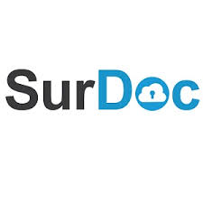

| Nome del servizio | Immagine logo del servizio | Indirizzo web dove raggiungerlo | Costo e spazio disponibile |
|---|---|---|---|
SurDoc |
 | http://www.SurDoc.com | Gratuito SurDoc mantiene le vostre preziose foto, musica, video e file salvati online nel caso in cui il computer si blocca o si perde / rubato. Backup e' continuo ed automatico ... quindi non hanno nemmeno bisogno di pensarci! |